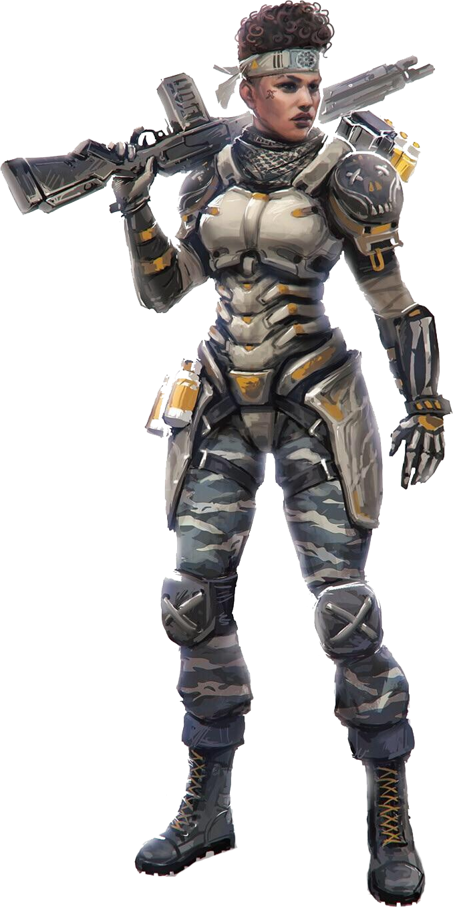

Born into a military family where she, her parents, and her four older brothers all served with the IMC, Bangalore has been an exceptional soldier her whole life. Dedicated to the IMC cause, she was top of her class at the IMC Military Academy and the only cadet who could take apart a Peacekeeper, equip it with a Precision Choke hop-up, and put it back together in under twenty seconds – blindfolded. In the months following the Battle at Gridiron, the IMS Hestia, with Anita and brother Jackson on board, was attacked by unknown assailants. A bomb on the outer hull blew out a chunk of the ship… but not before Jackson shielded her, sacrificing his own life to save hers. Anita watched helplessly, as Jackson was sucked out into the vacuum of space. After crashing on a Syndicate planet, Anita looked for both work, and the brother she refused to believe had died, so they could begin the decades-long trip back home. Now, she fights to raise money in the Apex Games, in the hopes of finding a pilot willing to take the epic trip back home to reunite with what remains of her family.
